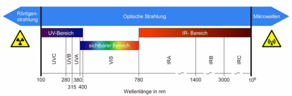
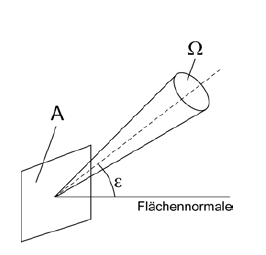

Es gelten die in § 2 OStrV festgelegten Begriffe. Im Folgenden werden zu wichtigen Begriffen nähere Erläuterungen gegeben (alphabetische Aufzählung).
Unter dem Ausmaß ist nach § 2 Absatz 9 OStrV die Höhe der Exposition gegenüber inkohärenter optischer Strahlung zu verstehen. Je nach Wellenlängenbereich und zu vermeidender Wirkung (Schutzziel) wird das Ausmaß durch die Strahlungsgrößen Bestrahlungsstärke, Bestrahlung oder Strahldichte ausgedrückt.
(1) Die Bestrahlung H (oder Energiedichte) ist das Integral der Bestrahlungsstärke E über die Zeit t. Sie ist gegeben durch folgenden Zusammenhang:
t2 H = ∫ E ⋅ dt t1 Einheit: J · m-2 (Joule pro Quadratmeter)
(2) Bei Expositionen an Arbeitsplätzen ist über die Expositionsdauer Δt = t2 – t1 zu integrieren.
(1) Die Bestrahlungsstärke E (oder Leistungsdichte) ist die auf eine Fläche fallende Strahlungsleistung dP je Flächeneinheit dA. Sie ist gegeben durch folgenden Zusammenhang:
E = dP dA
(2) Bei homogener Verteilung der Strahlungsleistung gilt:
E = P A Einheit: W · m-2 (Watt pro Quadratmeter).
In der Fachliteratur wird die Strahlungsleistung auch mit dem Formelzeichen Φ bzw. Φe bezeichnet.
(1) Die Betriebszustände der Quellen für inkohärente optische Strahlung müssen für die Gefährdungsbeurteilung genau definiert werden.
(2) Beispiele für Betriebszustände sind Normalbetrieb (bestimmungsgemäßer Betrieb, Gebrauch), Wartung, Service, Errichtung und Außerbetriebnahme.
(3) Für die Gefährdungsbeurteilung muss zwischen Betriebszuständen, die im Vergleich zum Normalbetrieb zu einer Gefährdungserhöhung und Betriebszuständen, die zu keiner Gefährdungserhöhung führen können, unterschieden werden.
Betrieb einer Quelle für inkohärente optische Strahlung im gesamten Funktionsbereich, ohne z. B. Wartung und Service.
Durchführung der Justierungen oder Vorgänge, die in vom Hersteller mit der Quelle für inkohärente optische Strahlung gelieferten Informationen für den Benutzer beschrieben sind und vom Benutzer ausgeführt werden, um die vorgesehene Funktion der Strahlungsquelle sicherzustellen. Normalbetrieb und Service sind hierbei nicht enthalten.
Durchführung der Tätigkeit oder Justierarbeiten, die in den Service-Unterlagen des Herstellers beschrieben sind und die in irgendeiner Art die Leistungsfähigkeit der Strahlungsquelle beeinflussen können.
Bei der Anwendung der Expositionsgrenzwerte sind in einigen Wellenlängenbereichen die Strahlungsgrößen mit einer biologischen Wirkungsfunktion zu bewerten. Sie werden dann als effektive Strahlungsgrößen bezeichnet. Zur Unterscheidung wird die Strahlungsgröße mit einem tiefgestellten Index gekennzeichnet, z. B. ist EB die effektive Bestrahlungsstärke für die "Blaulichtgefährdung" (engl. "blue light hazard") und Eeff die mit der Wichtungsfunktion S(λ) gewichtete Bestrahlungsstärke im UV-Bereich. Beispiele für Wichtungsfunktionen finden sich im Anhang "Biologische Wirkungen inkohärenter optischer Strahlung" dieser TROS IOS.
Emission im Sinne dieser TROS IOS ist das Abstrahlen von Energie in Form inkohärenter optischer Strahlung.
Exposition im Sinne dieser TROS IOS ist die Einwirkung von inkohärenter optischer Strahlung auf die Augen oder die Haut.
Die Expositionsgrenzwerte nach § 2 Absatz 5 OStrV sind maximal zulässige Werte bei Exposition der Augen oder der Haut gegenüber inkohärenter optischer Strahlung. Diese sind im Abschnitt 5 der TROS IOS, Teil 2 "Messungen und Berechnungen von Expositionen gegenüber inkohärenter optischer Strahlung" aufgeführt.
Hinweis:
Der EGW ist das maximale Ausmaß der inkohärenten optischen Strahlung, dem das Auge oder die Haut ausgesetzt werden kann, ohne dass damit akute Gesundheitsschädigungen gemäß Tabelle A.1 des Anhangs dieser TROS verbunden sind. Zum Schutz vor langfristigen Schädigungen durch die kanzerogene Wirkung von UV-Strahlung ist das Minimierungsgebot nach § 7 OStrV besonders zu beachten.
Die Expositionsdauer Δt ist – im Unterschied zur täglichen Arbeitszeit – die tatsächliche Dauer der Einwirkung inkohärenter optischer Strahlung auf die Augen oder die Haut während der Arbeitszeit.
Gefährdungen durch indirekte Auswirkungen sind alle negativen Auswirkungen von inkohärenter optischer Strahlung auf die Sicherheit und Gesundheit der Beschäftigten, die nicht durch die Expositionsgrenzwerte für die Augen und die Haut abgedeckt sind. Dazu gehören z. B. vorübergehende Blendung, Brand- und Explosionsgefahr, Entstehung von Gefahrstoffen sowie alle möglichen Auswirkungen, die sich durch das Zusammenwirken inkohärenter optischer Strahlung und fotosensibilisierender chemischer Stoffe am Arbeitsplatz ergeben können.
Inkohärente optische Strahlung im Sinne der OStrV ist optische Strahlung aus künstlichen Quellen, die im Unterschied zu Laserstrahlung ohne feste Phasenbeziehung der elektromagnetischen Wellen ist. Sie wird z. B. von folgenden Strahlungsquellen emittiert: Glühlampen, Leuchtstofflampen, LED, Gasstrahlern, Metall- und Glasschmelzen, Schweißlichtbögen.
Hinweis:
Wenn in dieser TROS IOS der Begriff inkohärente optische Strahlung verwendet wird, bezieht sich dieser nur auf die Emission aus künstlichen optischen Strahlungsquellen. Bei Bündelung von Strahlung natürlicher Quellen (beispielsweise bei Solarkraftwerken) findet diese TROS IOS hingegen auch Anwendung.
Künstliche Strahlungsquellen im Sinne der OStrV sind vom Menschen gemachte Quellen optischer Strahlung. Dazu gehören z. B. Lampen zur Beleuchtung, Scheinwerfer, Lampen und LED für Anzeigen, Elektro- und Gasschweißgeräte, Öfen zur Erwärmung, Öfen zum Schmelzen von Metall und von Glas, Lampen zur Entkeimung sowie zur Lack- und Kunststofftrocknung, Blitzlampen zur Ausleuchtung sowie Blitzlampen zur kosmetischen und medizinischen Behandlung.
Der ebene Winkel, innerhalb dessen ein Empfänger (optisches Messgerät) auf optische Strahlung anspricht, wird manchmal auch mit Gesichtsfeld, Akzeptanzwinkel oder FOV (von field of view) bezeichnet. Der Empfangswinkel γ kann durch Messblenden eingestellt werden. Die in der Expositionsgrenzwerteliste (Abschnitt 5 der TROS IOS, Teil 2 "Messungen und Berechnungen von Expositionen gegenüber inkohärenter optischer Strahlung") verwendete Einheit für γ ist Milliradiant (mrad).
(1) Eine mögliche Gefährdung nach § 1 Absatz 1 OStrV liegt vor, wenn eine Überschreitung der Expositionsgrenzwerte nach Abschnitt 5 der TROS IOS, Teil 2 "Messungen und Berechnungen von Expositionen gegenüber inkohärenter optischer Strahlung" durch inkohärente optische Strahlung nicht ausgeschlossen werden kann.
(2) Das gilt z. B. für Beschäftigte in der Nähe von Schweißarbeitsplätzen (z. B. auf Verkehrswegen), bei der Entkeimung mit UV-Strahlung, bei der Oberflächenrissprüfung mit UV-Strahlung oder Blaulicht, beim Aufenthalt in der Nähe starker Strahlungsquellen (Gebäudebeleuchtung, Projektionsgeräte ("Beamer"), Scheinwerfer, bei Schmelzöfen (Metall oder Glas) oder bei der Anwendung intensiv gepulster Lampen. Dies gilt auch bei der Wartung und Instandhaltung solcher Einrichtungen.
(1) Optische Strahlung nach § 2 Absatz 1 OStrV ist jede elektromagnetische Strahlung im Wellenlängenbereich von 100 nm bis 1 mm. Das Spektrum der optischen Strahlung wird unterteilt in ultraviolette (UV-)Strahlung, sichtbare (VIS-)Strahlung und infrarote (IR-)Strahlung (siehe Abbildung 1).

| Abb. 1 Spektralbereiche der optischen Strahlung |
(2) In der OStrV wurde für die langwellige Grenze des UV-A-Bereiches der Wert von 400 nm aus den Basis-Dokumenten der International Commission on Non-Ionizing Radiation Protection (ICNIRP, englisch für Internationale Kommission zum Schutz vor nichtionisierender Strahlung) übernommen. In anderen Dokumenten (z. B. in einigen Normen) wird diese Grenze entweder mit 380 nm oder mit 400 nm angegeben. Diese Unterscheidung bei der Angabe von unterschiedlichen Wellenlängenbereichen spielt jedoch bei der Anwendung der OStrV keine Rolle. Die Expositionsgrenzwerte sind hinsichtlich der Wellenlängengrenzen eindeutig definiert.
(1) Die Strahldichte L nach § 2 Absatz 8 OStrV ist der Strahlungsfluss oder die Strahlungsleistung P je Raumwinkel Ω je Fläche A cos ε. Dies gilt bei homogener Verteilung der Strahlungsleistung (Abbildung 2). Die Strahldichte L ist dann gegeben durch folgenden Zusammenhang:
Einheit: W · m-2 · sr-1
L = P Ω · A · cos ε
(2) Durch cos e wird das Kosinusgesetz berücksichtigt, da bei der Ermittlung der Strahldichte die projizierte Fläche einzusetzen ist, d. h. die Fläche, die bei Betrachtung der Fläche unter einem Winkel ε gegenüber der Flächennormalen mit dem Kosinus von ε abnimmt. Bei ε = 0 gilt:
L = P Ω · A

| Abb. 2 Strahldichte L unter einem Winkel ε |
Eine tatsächliche Gefährdung nach § 1 Absatz 1 OStrV liegt vor, wenn die Exposition durch inkohärente optische Strahlung so hoch ist, dass die Expositionsgrenzwerte ohne die Anwendung von Maßnahmen zur Vermeidung oder Verminderung nach § 7 OStrV überschritten werden. Das gilt z. B. für das Elektroschweißen, das Gasschweißen, die UV-Desinfektion und die UV-Sterilisation. Eine tatsächliche Gefährdung kann auch eine Gefährdung durch indirekte Auswirkungen sein (z. B. als Folge einer vorübergehenden Blendung, Brand- oder Explosionsgefahr).
(1) Der Winkel, unter dem die Quelle von einem Raumpunkt aus erscheint, wird definiert durch:
α = D r
(2) Dabei ist r der Abstand zur Quelle. Der Durchmesser D der Quelle wird wie folgt bestimmt:
Dabei ist die größte Winkelausdehnung αmax auf 100 mrad und die kleinste Winkelausdehnung αmin auf 1,7 mrad begrenzt.